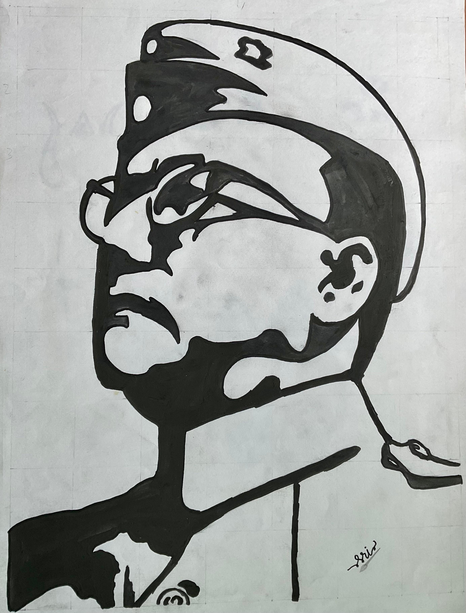
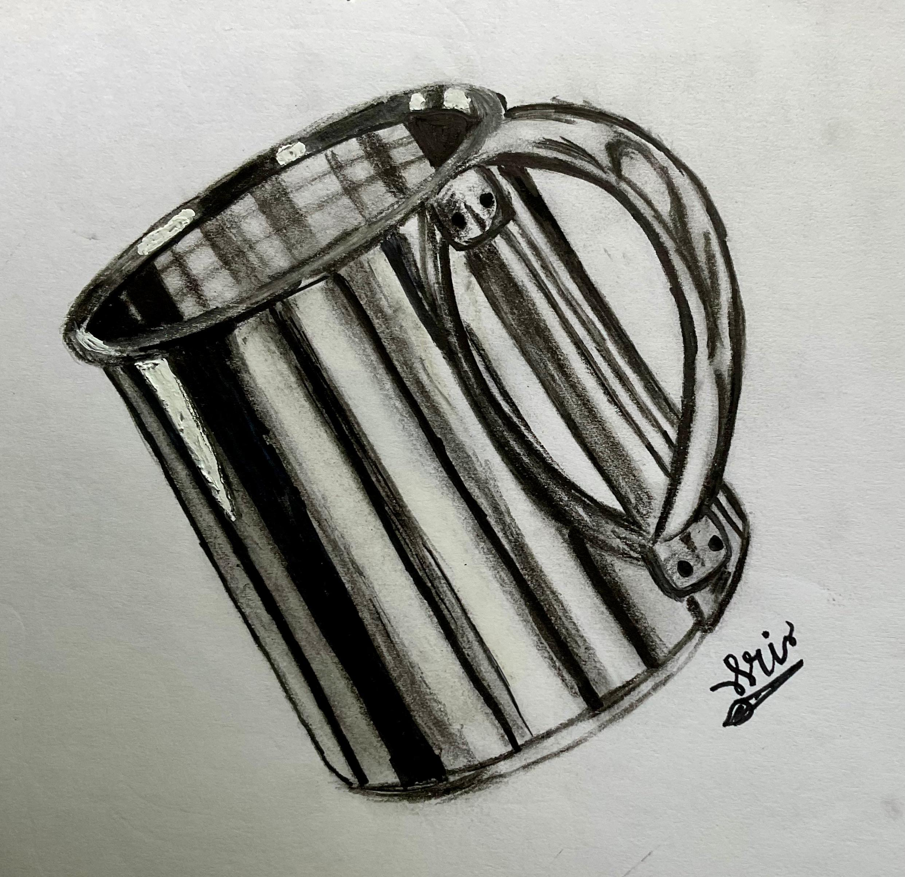
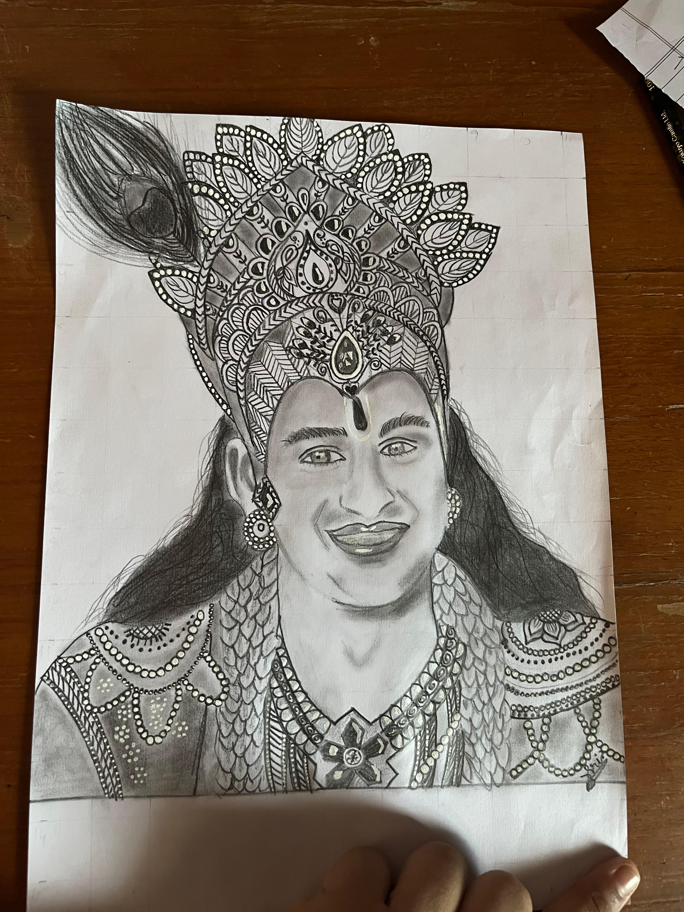
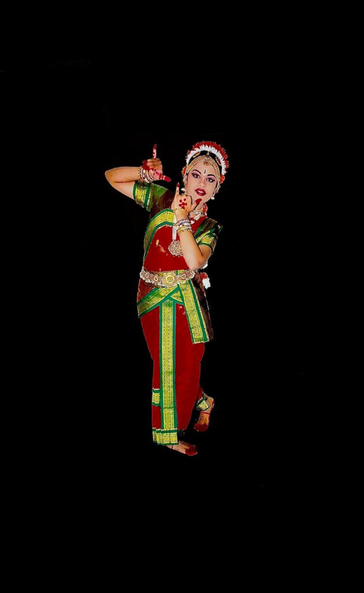
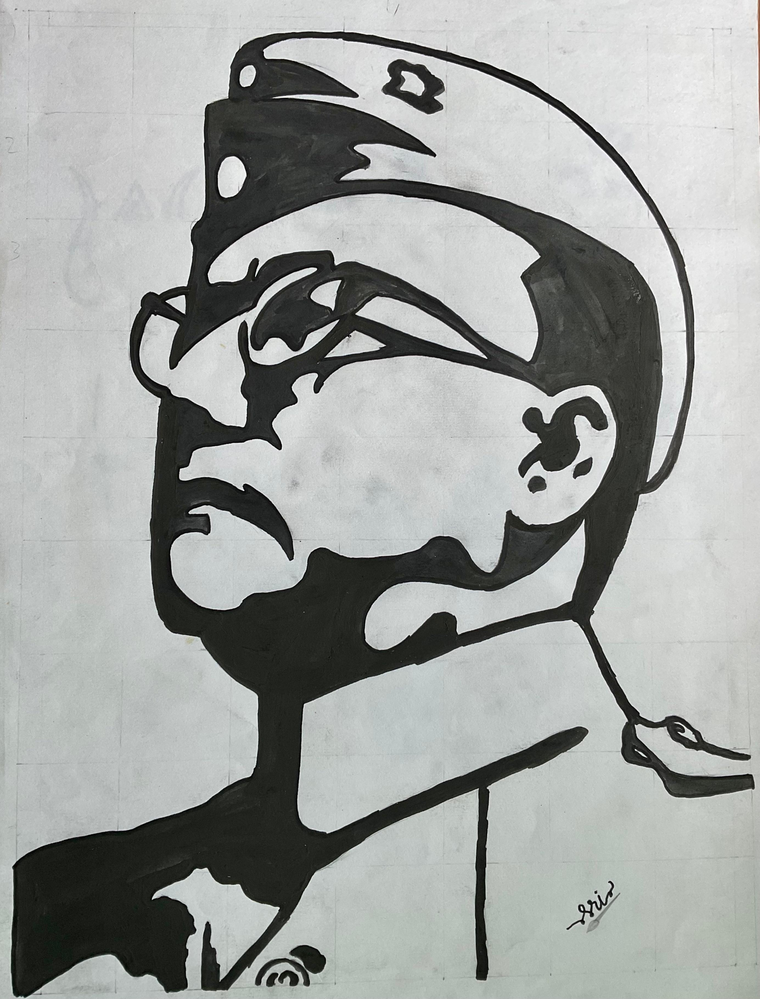
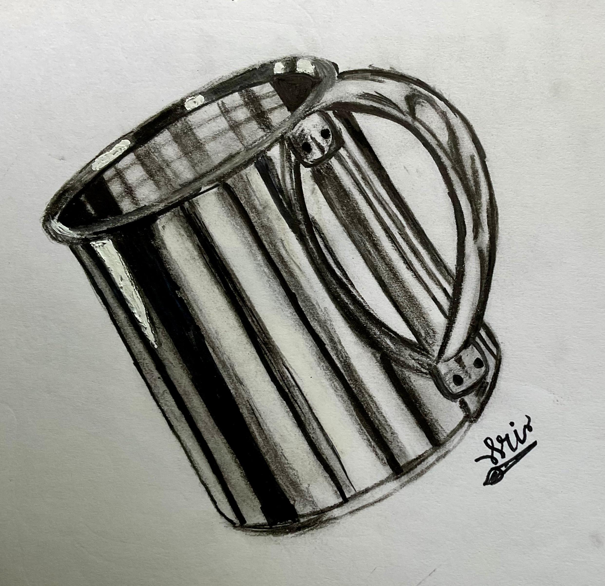
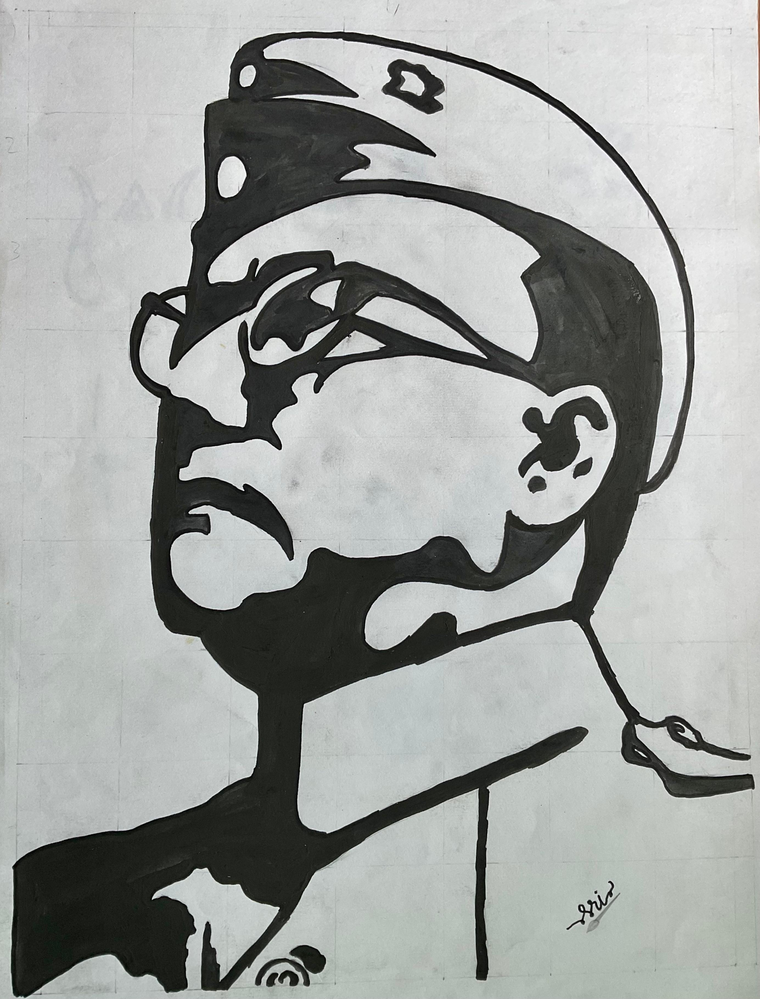
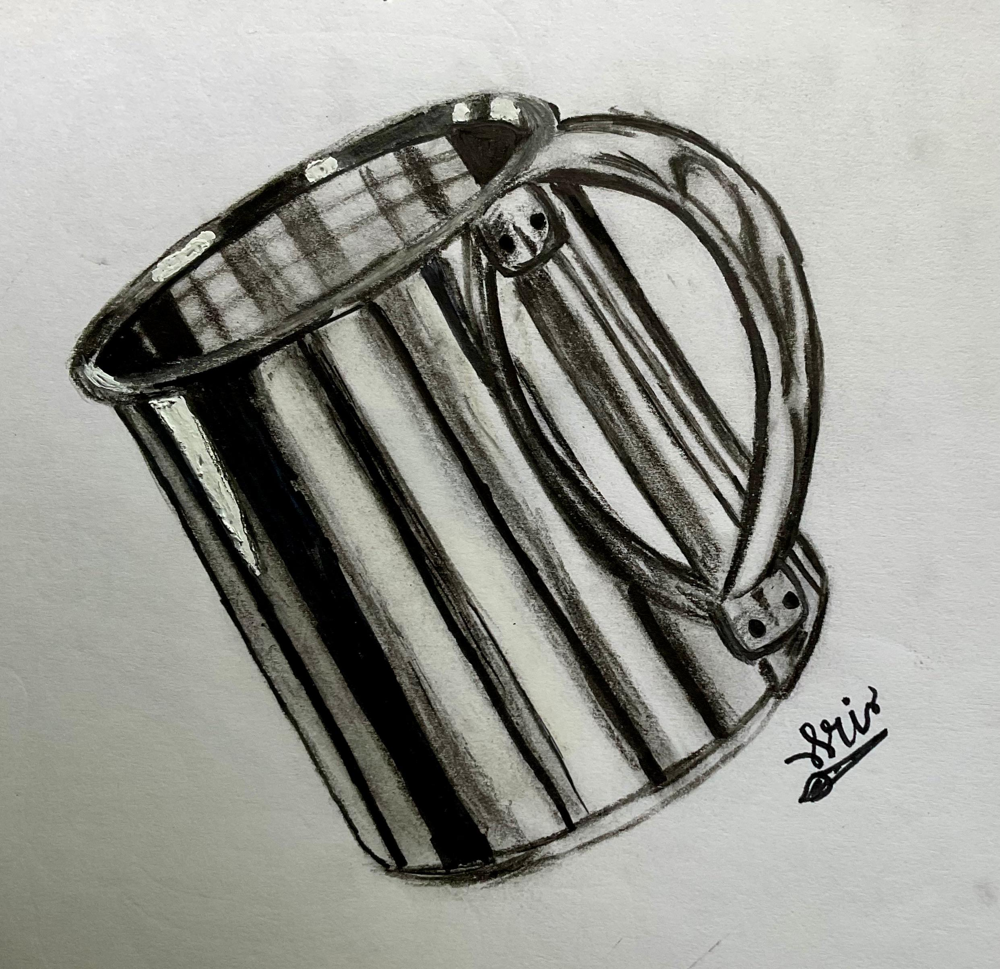
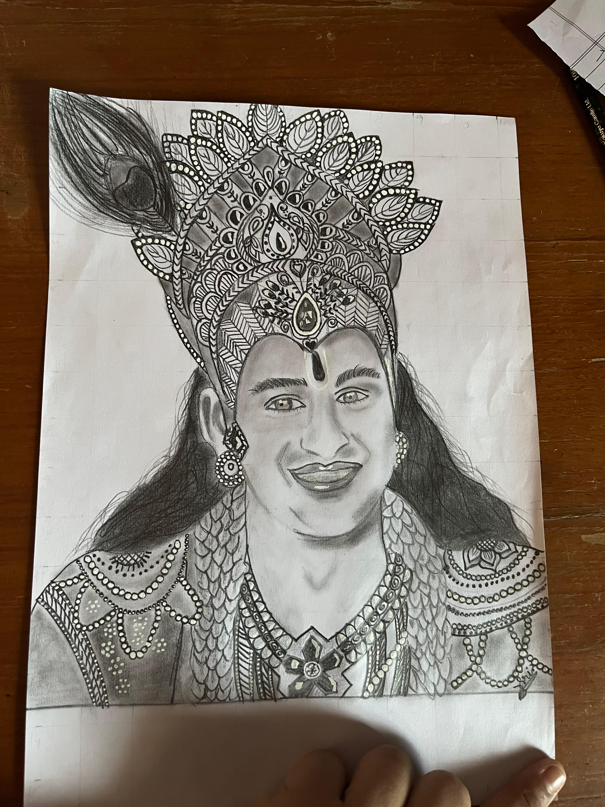
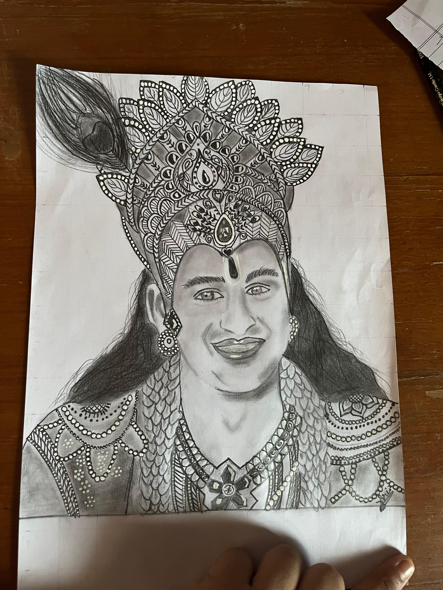

My artistic journey began during the COVID-19 pandemic with the encouragement of my friends. This newfound passion culminated in my contribution to Gokulashtami celebrations in 2023 through my paintings.
Here is my Painting Gallary:



Singing
My musical journey began with my involvement in the school choir. We started each day with uplifting prayer songs, fostering a harmonious atmosphere. Building on this foundation, I had the opportunity to represent my school in various inter-school competitions.
Classical Dance

Since starting my Kuchipudi dance training in 2010, I have been actively involved in performing arts. Hyderabad has been the stage for many of my performances, with an annual tradition of participating in Ganesh Festival celebrations. Soon after, in 2016, I achieved a significant milestone by participating in the Guinness World Records.


 



 
